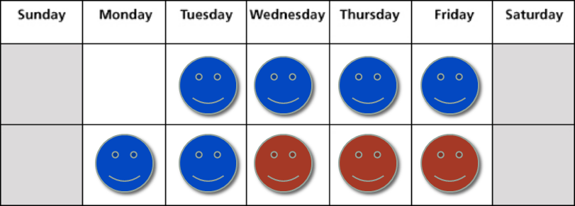
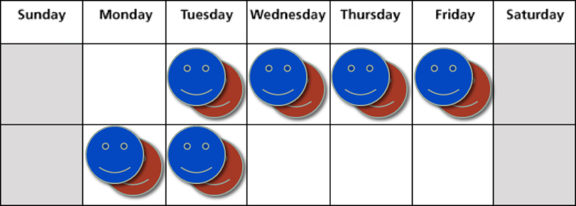

Scrum
An Introduction
Amri Hidayat (amri.hidayat@gmail.com)Brief introduction about me..
- [study] Computer Science @ UI
- [work] Microsoft Innovation Center @ UI
- [study] Information Studies @ NTU
- [work] Hewlett-Packard Asia Pacific
- [work] Wolters Kluwer Asia Pacific
- [work] Silverlake Mobility
My Github

My LinkedIn

Project Constraints
- Product Scope
- Time/Schedule
- Cost/Resource
Scrum
Delivering the highest business value in the shortest time
Scrum Roles
- Scrum Team
- Product Owner
- Scrum Master
Scrum Ceremonies
- Sprint Planning
- Daily Standup
- Product Review
- Process Review
Agile Values
- Focus
- Courage
- Openness
- Commitment
- Respect
Definition of Done
Team, together with the product owner, defines what "done" means- Design, coding, unit testing, integrated
- Acceptance tested, deployable
- Performance & Usability test
- Test in sandbox producation environment
- Update customer documentation & marketing plan
Extending "done"
Sprint Planning

Estimation
- Wideband Delphi
- PROBE
- Planning Poker
Planning Poker
Fun way of saying requirement estimation- Pick a requirement and discuss about it
- Each team member picks a number from the deck
- Reach to an agreement and move to another requirement
- Stop if the team say so ...
Velocity
Story points delivered for a period of time / Total ideal hours spent on a sprint

Sprint
So what do you do within sprint ?
1. Start a day with Daily Standup
2. Complete a task to achieve acceptance criteria of a user story
... and if you are developing a software ...3. Pair up, Test-Driven Development, Ship it
4. Try to automate things
Documentation
- Requirements
- Agile Modelling
User Story In Waterfall project, the customer defines his requirements through functional specifications (FSD)
Instead use a user story, to capture initial user needs
- Name, Intention, Criteria
- Make the user story as small as possible
- Make it testable (can write a test to verify it)
- Make it visible for all
Backlog
| Product Backlog | Sprint Backlog |
|---|---|
| Through out the project lifetime | Within a sprint |
| Will grow/shrink | Must not grow |
| Should be within project constraints (scope/time/cost) | Should be within team's velocity |
Agile Modelling
Get a user story from the customer
Create a workflow model to better understand the user story
Develop mockup screens
Use mockups & workflow together to build data model
Agile Best Practices
Improving Velocity
- Pay down technical debt
- Improve customer involvement
- Provide needed resources
- Offload programmer duties (automate things)
Automation
- Automate the build (Ant/Maven/Gradle/NAnt)
- Hyperaware Editing (Infinitest/NCrunch)
- Automate the acceptance tests (Robot Framework / CodedUI)
- Continous Integration (Jenkins/TFS)
Improving Skills & Knowledge
Practice makes perfect
- Allocate 20% of your time to develop skills
- One way is by doing: Dojo & Kata
- Katas: Algorithm > Game > Technology> Architecture
Topless Meetings
Why Successful People Never Bring Smartphones Into Meetings1
- Lack of respect
- Lack of attention
- Lack of listening
- Lack of power
[1] http://www.forbes.com/sites/kevinkruse/2013/12/26/why-successful-people-never-bring-smartphones-into-meetings/
Ad-hoc & Frequent Communications
Face 2 Face > Video Conference > Phone > Message Chat > Nothing

Smaller Handoffs
Problem: By the time we finished delivering a feature, it's already too late for QA to do any acceptance testing (let alone regression testing)
Transfer small tasks frequently. Once a developer finished with one acceptance criteria, hand it over to QA to test just that criteria. The developer could continue with the next acceptance criteria
Smaller Handoffs (continued)
 Smaller Handoffs (continued)

Product Review
- Tell, don't show (describe what the user story is about)
- Describe the impact (business value) of the functionality being presented
- If everything goes haywire ? Show the automated test result
Swarming
- Helps on knowledge sharing between team member. Also helps reducing communication between team member <> product owner.
- Boost confident of the team on taking/conquering more complex problem (mission critical applications)
- Collective Ownership of the whole application
Pair Programming & TDD
- They do work best together
- "Two heads are better than one","It takes two to tango"
- Navigator (Strategical) + Driver (Tactical)
- Great way to start is by doing Fizz Buzz Kata
- TDD Structure: Arrange, Act, Assert
- TDD Process: Make test fail, Make test pass, Refactor
Specification by Example (A-TDD)
Tests as requirements, Requirements as testsDiscuss in workshop -> Develop in concurrence -> Deliver for acceptance

Is scrum not your cup of tea ?
relax, we have other agile methodologies that might suit to your taste
- Feature Driven Development
- Kanban
- eXtreme Programming